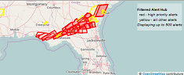
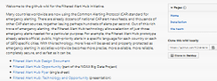

|  | The cloud-based Filtered Alert Hub aggregates emergency alerts worldwide. Click here for recent alerts. |
| This Hub allows for filtering aggregated alerts to fit a particular purpose. For example, the prototype now makes a separate news feeds containing official, public, high-priority alerts in a specific language for each country and each of 1870 cities. Click here for these feeds. | |
| At present, the prototype gathers alerts from 80+ sources, and more are expected in the coming months. Click here for current alert sources. | |
|  | Development of the Filtered Alert Hub is part of the NOAA Big Data Project. Click here for the project Wiki, and to access the free, open source software. |